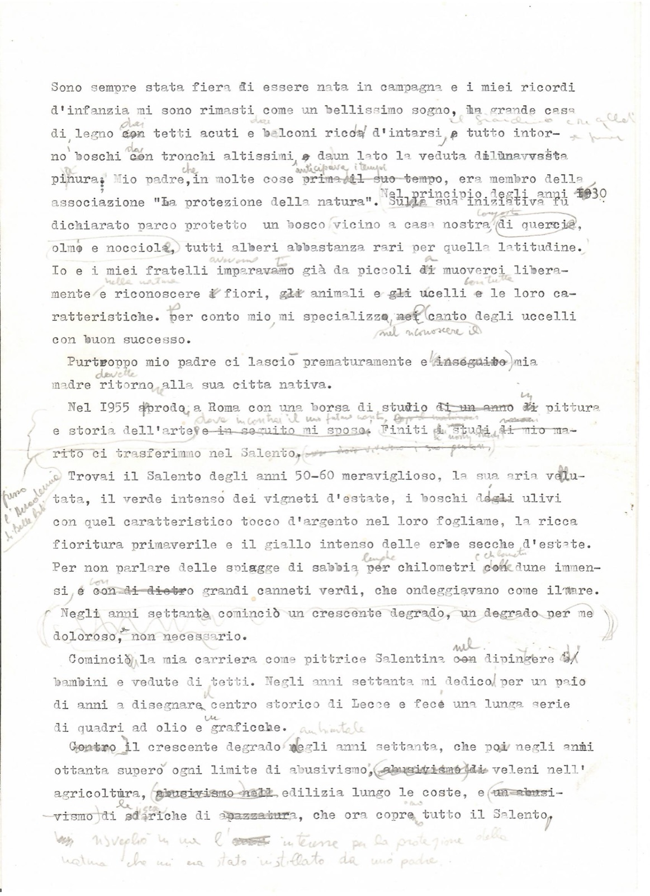
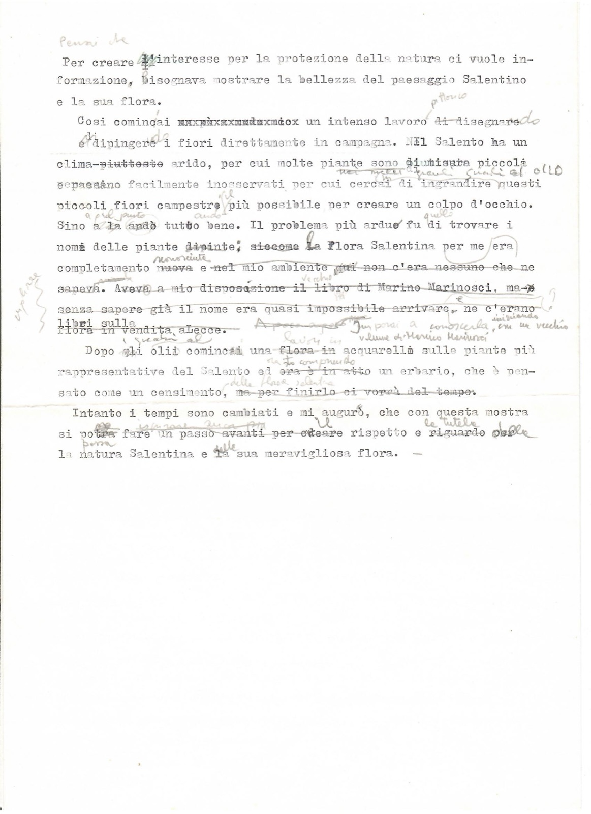

“Sono sempre stata fiera…”
- Categoria
- Saggistica
- Fogli
- 2
- Tag
- autobiografia Svezia
Foglio 1 di 2

[dattiloscritto con molte correzioni a penna; si trascrive la lezione finale] [a margine: Primo l'Accademia di Belle Arti [?]] Sono sempre stata fiera di essere nata in campagna e i miei ricordi d'infanzia mi sono rimasti come un bellissimo sogno, la grande casa di legno dai tetti acuti e balconi ricchi d'intarsi, tutto intorno boschi dai tronchi altissimi e da un lato la veduta di una vasta pianura. Mio padre, che in molte cose anticipava i tempi, era membro della associazione "La protezione della natura". Nel principio degli anni 1930 sulla sua iniziativa fu dichiarato parco protetto un bosco vicino a casa nostra, composto di quercia, olmo e nocciola, tutti alberi abbastanza rari per quella latitudine. Io e i miei fratelli avevamo imparato già da piccoli a muoverci liberamente nella natura e riconoscere fiori, animali e uccelli con tutte le loro caratteristiche. Per conto mio mi specializzo nel riconoscere il canto degli uccelli con buon successo. Purtroppo mio padre ci lasciò prematuramente e mia madre dovette ritornare alla sua città nativa. Nel 1955 approdo a Roma con una borsa di studio in pittura e storia dell'arte, dove incontrai il mio futuro marito… Finiti i nostri studi ci trasferimmo nel Salento. Trovai il Salento degli anni 50-60 meraviglioso, la sua aria vellutata, il verde intenso dei vigneti d'estate, i boschi di ulivi con quel caratteristico tocco d'argento nel loro fogliame, la ricca fioritura primaverile e il giallo intenso delle erbe secche d'estate. Per non parlare delle spiagge di sabbia lunghe chilometri e chilometri con dune immensi e con grandi canneti verdi, che ondeggiavano come il mare. Negli anni settanta cominciò un crescente degrado, un degrado per me doloroso, non necessario. Cominciò la mia carriera come pittrice Salentina nel dipingere bambini e vedute di tetti. Negli anni settanta mi dedico per un paio di anni a disegnare il centro storico di Lecce e fece una lunga serie di quadri ad olio e un grafiche. Contro il crescente degrado ambientale negli anni settanta, che poi negli anni ottanta superò ogni limite di abusivismo, di veleni nell'agricoltura, edilizia lungo le coste, e di scariche di spazzatura, che ora copre tutto il Salento, si risvegliò in me l'interesse per la protezione della natura che mi era stato instillato da mio padre.
Foglio 2 di 2

[dattiloscritto con molte correzioni a matita; si danno testo battuto e correzioni] [a matita in alto: Pensai che] Per creare l'interesse per la protezione della natura ci vuole informazione, bisognava mostrare la bellezza del paesaggio Salentino e la sua flora. Così cominciai [cancellato a macchina] un intenso lavoro [cancellato: di disegnare e] [aggiunto: pittorico, dipingendo] dipingere i fiori direttamente in campagna. Il Salento ha un clima [cancellato: piuttosto] arido, per cui molte piante sono [cancellato: di misura piccola] [aggiunto: di piccole dimensioni [?]] e passano facilmente inosservati per cui cercai di ingrandire questi piccoli fiori campestri più possibile per creare un colpo d'occhio. Sino a [cancellato: là] [aggiunto: quel punto] andò tutto bene. Il problema più arduo fu [aggiunto: quello] di trovare i nomi delle piante [cancellato: dipinte], [cancellato: siccome] la Flora Salentina per me era completamente [cancellato: nuova] [aggiunto: sconosciuta] [cancellato: e nel mio ambiente qui non c'era nessuno che ne sapeva. Aveva a mio disposizione il libro di Marino Marinosci, ma senza sapere già il nome era quasi impossibile arrivare, ne c'erano libri sulla flora in vendita a Lecce.] [aggiunto a matita: Imparai [?] a conoscerla, iniziando con un vecchio volume di Martino Marinosci] Dopo gli olii cominciai una flora in acquarelli sulle piante più rappresentative del Salento ed [cancellato: era è in atto] [aggiunto: sto compiendo] un erbario [aggiunto: della flora salentina], che è pensato come un censimento, [cancellato: ma per finirlo ci vorrà del tempo]. Intanto i tempi sono cambiati e mi auguro, che con questa mostra si [cancellato: potrà] [aggiunto: possa] fare un passo avanti per [cancellato: creare] [aggiunto: il] rispetto e [cancellato: riguardo per] [aggiunto: la tutela delle] la natura Salentina e [cancellato: la] [aggiunto: della] sua meravigliosa flora. — [a margine sinistro, a matita: esplorare [?]]
Documentazione digitale
Documentazione e codifica dell'ITEM: